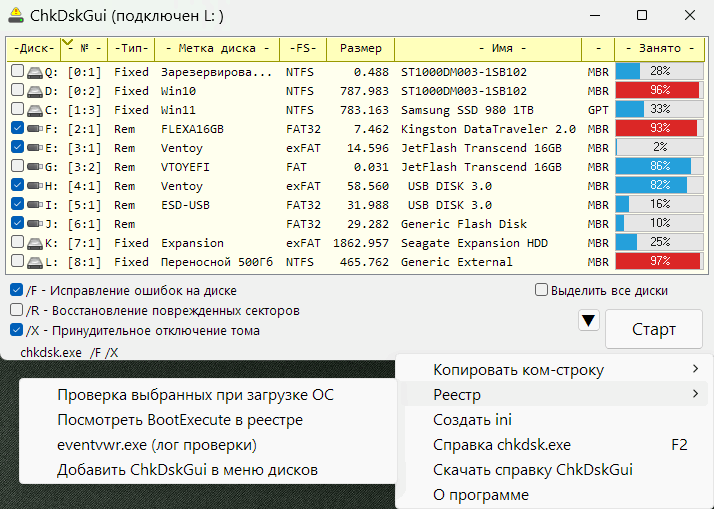

ChkDskGui
Назначение
Проверка диска на ошибки.
GUI оболочка для консольной системной утилиты chkdsk.exe, но с удобством выбора дисков и флагов проверки.

Работа с программой
Кратко: отметить диски, нажать "Старт".
Проверка в несколько потоков
Так как несколько физических дисков можно проверять одновременно, то диски например [0:1] и [0:2] принадлежат одному физическому и их можно отметить оба и запустить проверку. Далее отметить [1:1] и [1:2] и запустить ещё проверку проверку не дожидаясь окончания первой, и так далее. Это может быть флешка как один физический. Но не нужно запускать [0:1] и [0:2] в разных потоках, так как головка у диска одна и процесс будет длительней, так как вместо равномерного движения головки она будет скакать с одного логического диска на другой.
Строка состояния
Отображает как выглядит командная строка. При отсутствии GUI просто нажать Win+R, ввести эту команду и выполнится тоже самое. Хотя она закроется после выполнения и нужно добавить паузу, чтобы посмотреть результаты.
Проверка текущей системы
Если компьютер медленно работает с жёстким диском или зависает допустим при выходе из браузера FF или даёт синий экран, но при этом позволяет загрузится, то можно не используя LiveCD принудительно активировать проверку дисков на запуске Windows. Для этого отметить диски и нажать выбрать в меню "Реестр -> Проверка выбранных при загрузке ОС", после импорта выдаётся сообщение какие данные добавились в реестр. Кстати строка будет содержать как раз таки не отмеченные диски, то есть диски, которые нужно игнорировать при проверке. Реестр требует права администратора. Также эта опция удобна не только для системного диска, но и в случае если система предупреждает что не удаётся отключить диск. Учитывайте, что если сделать импорт данных из под LiveCD в гостевой реестр, то порядок дисков может быть другим, поэтому нужно отметить буквы дисков какие они были бы в вашей системе.
Чтобы посмотреть результаты проверки проходившей при запуске Windows выберите в контекстном меню "Реестр -> eventvwr.exe (лог проверки)", откроется "Просмотр событий", нажать "Журналы Windows" -> "Приложения", выбрать окно событий, нажать Ctrl+F, в окно поиска ввести "Wininit" (оно в буфере обмена при выполнении команды), кликнуть на строке, внизу кликнуть на область данных и скопировать (Ctrl+A, Ctrl+V) в блокнот для просмотра, так как в программе окошко просмотра маленькое.
autocheck autochk /p /K:CDE *
Здесь ключи имеют следующее значение:
/p - принудительная проверка. Без этого ключа проверка будет происходить если система сама поставила флаг сбоя. Обычно флаг сбоя проявляется если вставить флешку и ОС предлагает проверить её перед открытием.
/K:CDE - здесь /K определяет игнорирование перечисленных дисков, в данном случае дисков C:\, D:\, E:\
* - звёздочка указывает что нужно проверять все диски, но кроме указанных в ключе /K
Список дисков
Список дисков выведен максимально подробно, чтобы проще идентифицировать. Поддерживаются только файловые системы, которые поддерживает chkdsk.exe (Linux ни разу не увидит). При этом утилита захватывает типы дисков: Fixed (жёсткий диск) и Removable (Съёмное устройство, флешка), то есть игнорирует Ramdisk (виртуал в памяти), CDRom (неисправляемые), Network (удалённые). Работает сортировка по колонкам.
Если вместо данных у диска прочерк "---", то нарушена файловая система. Этот диск также можно проверить, но причиной сбоя может быть плохой контакт в шлейфах (питания и данных) жёсткого диска, соответственно нужно устранить плохой контакт, если ошибки не устраняются.
ini-файл
В комплекте ini-файл для возможности сохранения или использования некоторых параметров. Если этого не нужно, то удалить файл и программа не будет пытаться его создавать и запускается с опциями по умолчанию.
Проверка без GUI
Командную строку можно получить в буфер обмена кликнув строку состояния, выбрав перед этим диск (не галкой). А также в контекстном меню выбрать пункт "Копировать ком-строку", в этом случае диски нужно отметить галкой. Рекомендуется короткая ком-строка, так как длинная обрезается в поле окна "Выполнить".
Вызвать Win+R, вставить строку:
cmd.exe /c (@Echo off & Title проверка диска & Color 1e & chkdsk.exe C: /F /X & set /p Ok=^>^>)
Здесь cmd.exe передаётся команда, где амперсанд (&) является разделителем строк-команд.
В cmd-файле это выглядело бы так:
@Echo off
Title проверка диска
Color 1e
chkdsk.exe C: /F /X
set /p Ok=^>^>
Предпоследние 2 команды наиболее важные, собственно проверка в нашем случае диска C: и пауза, иначе окно закроется при завершении проверки и невозможно будет отследить результаты.
Используйте в меню пункт "Для bat-файла", чтобы получить данные в кодировке Windows-1251, при этом данные проверки будут выводить наибольшую информацию.
Поддержка ком-строки
Поддержка ком-строки добавлена всвязи с удобством выбрать ChkDskGui из контекстного меню диска в файловом менеджере и этот диск будет выделен в списке. Для этого в реестр нужно добавить следующие данные, указав свой путь и экранируя наклонную черту:
Windows Registry Editor Version 5.00
[HKEY_CLASSES_ROOT\Drive\shell\ChkDskGui]
@="ChkDskGui"
"Icon"="\"C:\\папка\\ChkDskGui.exe\""
[HKEY_CLASSES_ROOT\Drive\shell\ChkDskGui\command]
@="\"C:\\папка\\ChkDskGui.exe\" \"%1\""
Эта команда будет выглядеть как ChkDskGui.exe С:\
Теперь добавление в меню дисков есть в меню программы.
Описание ini-файла
[set] ; секция параметров
StartDisk = 2 ; Номер диска от которого начать отсчёт. 2 означает начать с C:\ пропуская A:\ и B:\
FontSize = 10 ; Размер шрифта везде (7 - 15 -> 9), к кнопка добавляется +3
Color = f0 ; Цвет консоли
Font1 = Consolas ; Шрифт в списке дисков
Font2 = Segoe UI ; Шрифт остальное (чекбоксы, кнопки)
WinW = 692 ; Ширина окна (480 - 630 -> 480)
WinH = 238 ; Высота окна (160 - 480 -> 210)
WinM = 0 ; развернуть на весь экран
WinX = 572 ; X-координата окна
WinY = 0 ; Y-координата окна
SortOrder = 1 ; Порядок сортировки "1" - возрастание, "-1" - убывание
indexSort = 1 ; Индекс колонки, по которой будет сортировка списка дисков
align = 0 ; Выравнивание окна. Если 1, то размер окна подстраивается под содержимое списка (увеличивается высота при вставке диска и ширина)
; ignore = ABFGHI ; игнорирование дисков, по умолчанию закоментировано (отключено). Укажите буквы дисков, которые нужно убрать из списка, например диски картридера.
Встроена защита, нельзя указать данные, которые выходят из ограничивающего диапазона. Если всё же выходят, то стрелкой указан чем он заменяется. Если неверное имя шрифта, то используется системный, если не указан, то Consolas и Segoe UI.
Если ini отсутствует, то настройки по умолчанию (0, 9, 480, 210, 1e, Consolas, Segoe UI).
Зачем системной утилите настройки? Ну всё же удобнее для тех кто плохо видит может увеличить шрифт. Если много дисков, то удобнее сделать больше размер окна в высоту, чтобы не приходилось прокручивать. Шрифты в принципе моноширинный уже не обязателен, так как список поддерживает колонки и выравнивать шрифтом нет необходимости. Если удалить ini программа не будет пытаться его создавать и запускается с опциями по умолчанию.
Настройка цвета консоли
Первая цифра - цвет фона, вторая -цвет текста
| Тёмные тона |
| 0 |
| 1 |
| 2 |
| 3 |
| 4 |
| 5 |
| 6 |
| 7 |
| 8 |
| Светлые тона |
| 9 |
| a |
| b |
| c |
| d |
| e |
| f |
Светлые можно использовать на фоне тёмных и наоборот
|
|
|
| 0f 0f 0f 0f |
07 07 07 07 |
0a 0a 0a 0a |
| 1e 1e 1e 1e |
1b 1b 1b 1b |
3b 3b 3b 3b |
| 2e 2e 2e 2e |
70 70 70 70 |
f0 f0 f0 f0 |
Ключи (параметры запуска Windows 10)
CHKDSK [том[[путь]имя_файла]]] [/F] [/V] [/R] [/X] [/I] [/C] [/L[:размер]] [/B] [/scan] [/spotfix]
том - Буква диска (с двоеточием после нее), точка подключения или имя тома.
имя_файла - Файлы, проверяемые на наличие фрагментации (только FAT/FAT32).
/F - Исправляет ошибки на диске.
/V - Для FAT/FAT32: выводит полный путь и имя каждого файла на диске. Для NTFS: выводит сообщения об очистке (при их наличии).
/R - Ищет поврежденные сектора и восстанавливает уцелевшую информацию (требует /F, когда не указан параметр /scan).
/L:size - Только для NTFS: задает размер файла журнала (в КБ). Если размер не указан, выводится текущее значение.
/X - Предварительно отключает том (при необходимости). Все открытые дескрипторы для этого тома станут недопустимы (требует /F)
/I - Только для NTFS: выполняет менее строгую проверку элементов индекса.
/C - Только для NTFS: пропускает проверку циклов внутри структуры папок.
/B - Только для NTFS: повторно оценивает поврежденные кластеры в томе (требует /R).
/scan - Только для NTFS: выполняет оперативное сканирование тома
/forceofflinefix - Только для NTFS (необходимо использовать со "/scan"): обходит восстановление в подключенном состоянии; все найденные неполадки добавляются в очередь для восстановления в автономном режиме (т. е. "chkdsk /spotfix").
/perf - Только для NTFS (необходимо использовать со "/scan") использует больше системных ресурсов для скорейшего выполнения сканирования. Это может отрицательно повлиять на производительность других задач, выполняемых в системе.
/spotfix - Только для NTFS: точечно исправляет ошибки в томе
/sdcleanup - Только для NTFS: собирает ненужные данные дескриптора безопасности в качестве мусора (требует /F).
/offlinescanandfix - Запускает автономную проверку и исправление тома.
/freeorphanedchains Только для FAT/FAT32/exFAT: освобождает потерянные цепочки кластеров вместо восстановления их содержимого.
/markclean - Только для FAT/FAT32/exFAT: помечает том как чистый, если не были обнаружены повреждения, даже если параметр /F не задан.
Параметр /I или /C сокращает время выполнения Chkdsk за счет пропуска некоторых проверок тома.